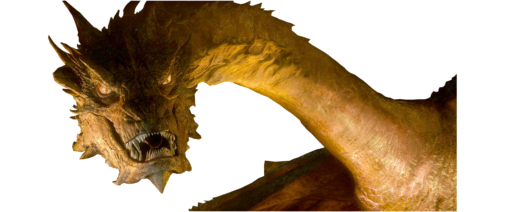

Czym jest DNV game
DNV game to gra tworzona przez DNV studios. Gra jest rouglike-iem z elementami RPG w któej to ty tworzysz swojego własnego bochatera i przemierzasz proceduralnie generowane lochy. gra jest silnie inspirowana Rouge Fable III i innymi tytułami.
Losowe linki
Odsyłacz do strony o smokach na wikipedii.
